The BlogDesigned and built · 13 min read
A five-year-old blog, rebuilt so I can publish from any browser.
The Blog is where I publish as अvinash, in English, Hindi and Konkani. I designed and built it on my own: first on a ready-made theme in 2021, then as my own site with a writing interface in 2026.
- Role
- Design and build, solo
- Why
- A home for my own poems, essays, serial fiction and a written podcast
- Timeline
- May 2021 to July 2026. Rebuilt in July 2026
- Platform
- Web, on phones and desktops
- Stack
- Astro 5, Sveltia CMS, Pagefind, Netlify
- Status
- Live, with 32 posts. No reader numbers to share
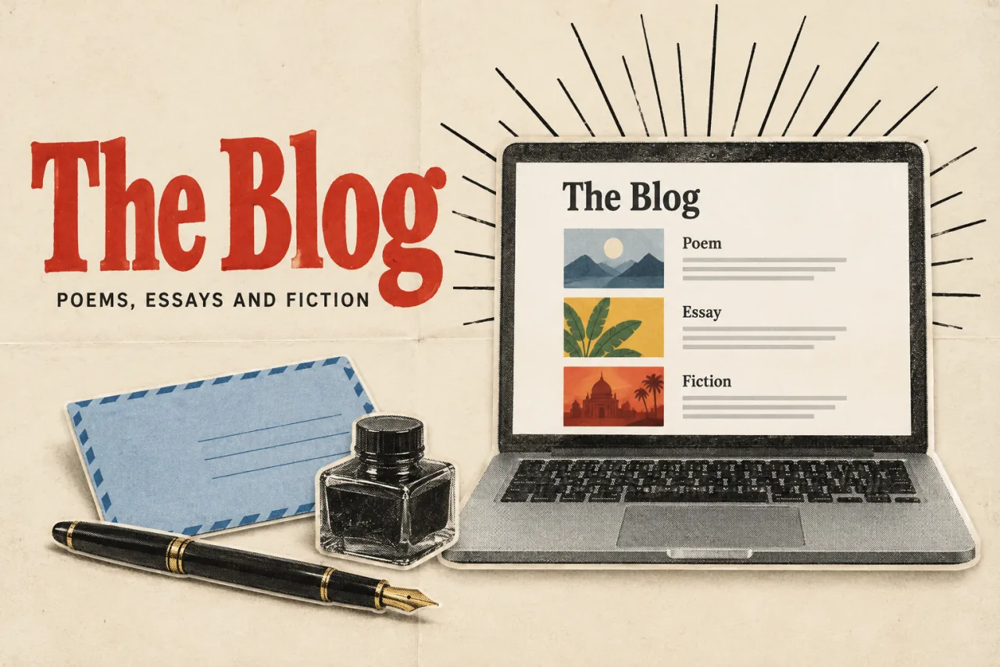
In short
- The problem: my blog ran on a borrowed theme. A new post meant a Markdown file, a terminal and a commit, and my poems were stored as code.
- What I did: in July 2026 I rebuilt it in Astro with my own design, moved all 32 posts without breaking a link, and added a writing interface I can open from any browser.
- The key idea: let the form of the writing shape the page. Poems keep their lines, serials keep their order, and Hindi and Konkani get a proper Devanagari typeface.
- Where it stands: live, with 32 posts. I have no reader numbers to share.
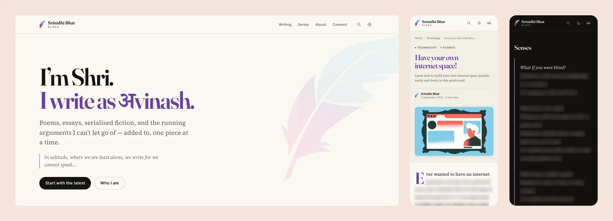
01 Why I rebuilt it
The blog had outgrown a theme I borrowed in 2021
I started the blog in May 2021 on Stack, a free theme for Hugo. Hugo is a tool that turns plain text files into a website. On the first day the site held 22 posts, some dated as far back as 2017.
My own Blog site (srinidhi-blogs.netlify.app) is built on a HUGO theme!
It worked, but the theme made most of the choices. It was dark by default and came with its own sidebar and widgets. Publishing a post meant a Markdown file, a terminal and a commit. Markdown is plain text with a few marks for headings and links.
Two things fitted my writing badly. Poems sat in code blocks, which kept their line breaks but set them like code. And a serial story was filed under a topic like any other post, with nothing to say which part came first.
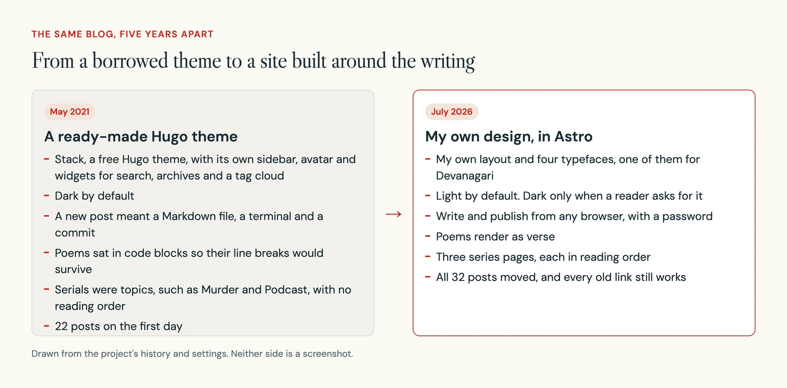
02 Five years
Most of the work came in three bursts
The project history has 75 commits. A commit is one saved change to the project. They bunch up around three moments: setting the site up in May 2021, a five-part Formula 1 primer in January 2022, and the rebuild in July 2026.
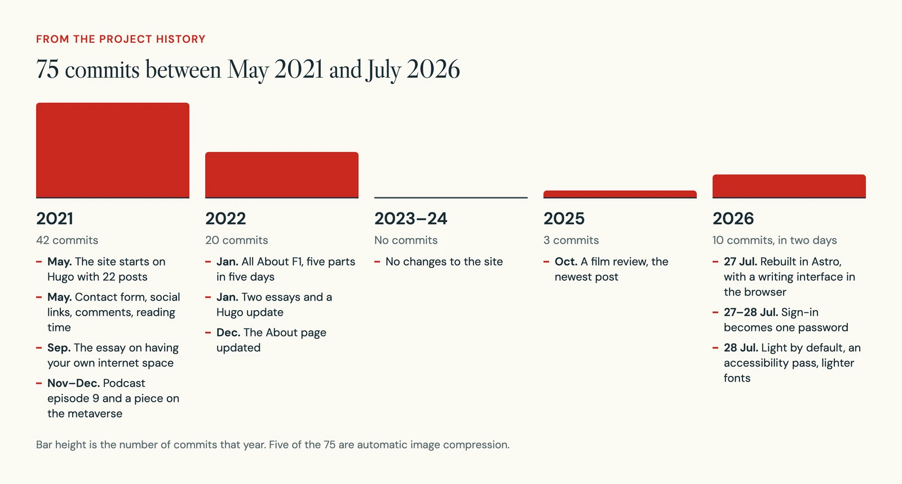
After January 2022 the blog went quiet. There were two small edits that December, then nothing until a film review in October 2025. The rebuild landed in ten commits over 27 and 28 July 2026.
03 How it works
I write in a browser, and readers get plain pages
The site is static. Every page is built ahead of time as a finished file, so a reader's browser only has to download it. The writing side is a CMS, a content management system: a form in the browser where I write and publish posts.
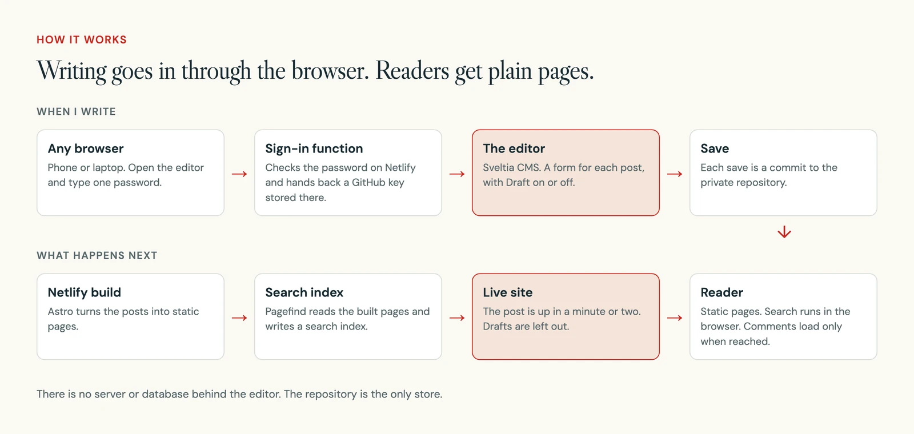
There is no server or database behind the editor. Each save becomes a commit in the project's private repository, and Netlify rebuilds the site from it. A post is live a minute or two later.
The home page is the front door, so I built it as a set of shelves, one for each kind of writing.
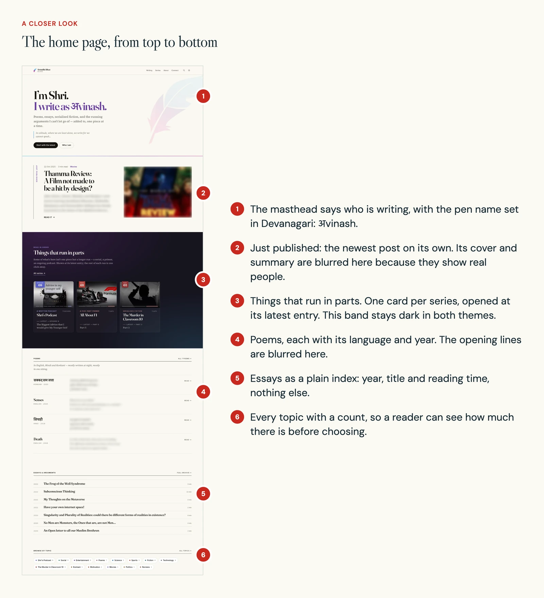
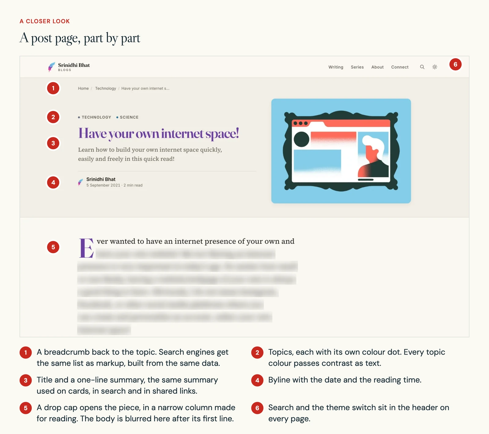
04 Decision 1
A poem keeps its lines, and I did not have to learn a new mark
What you see: a poem is set in serif italic beside a thin violet rule. Every line break and every gap between stanzas is kept as written.
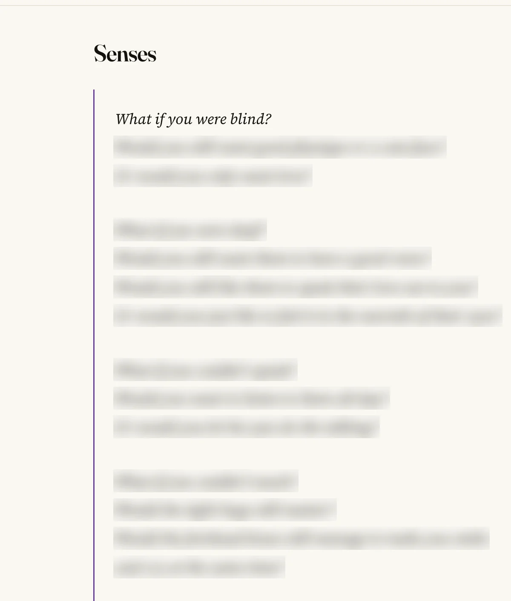
In the build: I kept the habit my old posts already had. All seven poems were already in code fences, the marks Markdown uses for code. A small plugin now reads any fence with no language named as a poem. So the text of the poems moved across without a single edit.
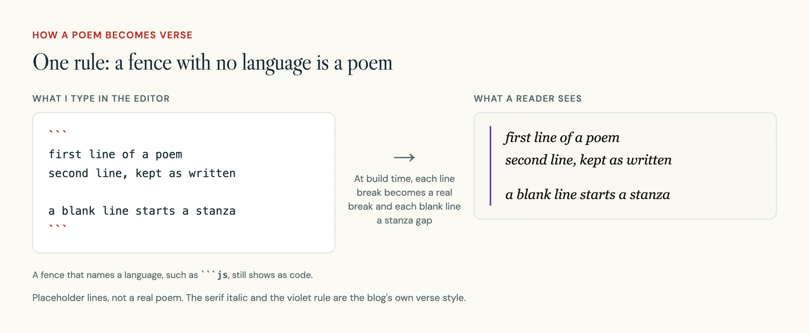
The Hindi and Konkani poems needed a real Devanagari typeface, so every font stack includes Noto Serif Devanagari. That had a cost. The pen name in the footer put one Devanagari letter on every English page, which pulled in the whole 124KB Hindi font. Now that letter comes from its own 1.4KB file, and the full font loads only on pages that use it.
05 Decision 2
A serial is read in order, so its title carries the part number
What you see: each serial has its own page that lists the parts in order and says they are meant to be read that way. There are three: a murder mystery in three parts, a written podcast in nine episodes and a Formula 1 primer in five parts.
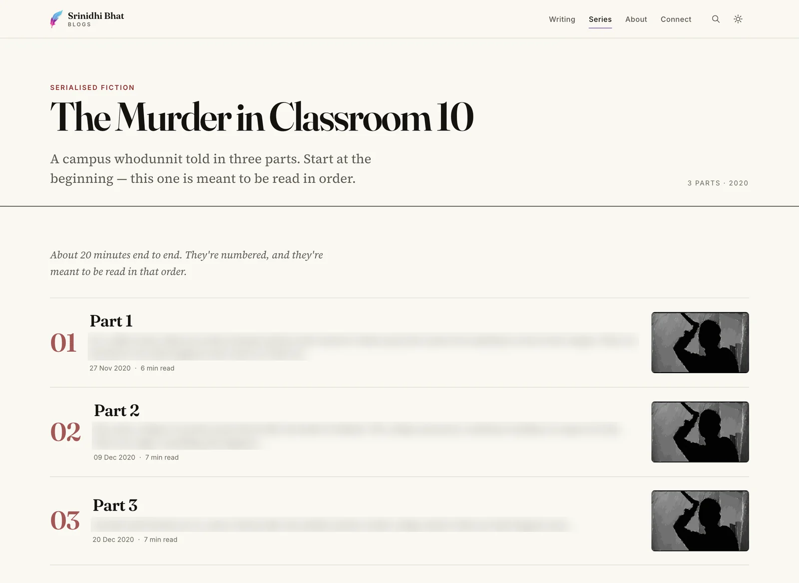
In the build: there is no series field on a post. Each series has a rule that looks at the end of a post's title, such as "(Part 2)". The rule decides which series a post joins and where it sits.
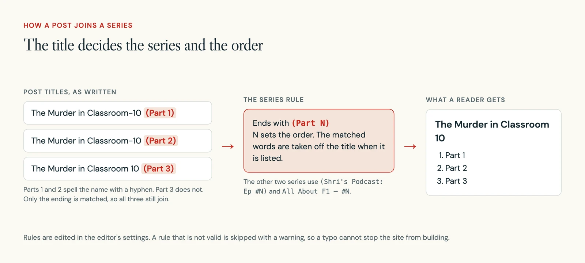
I ruled out a series field on every post. It would have meant editing every old part by hand, and the titles already carried the numbers. The rules are edited in the editor's settings. A rule with a typo is skipped with a warning, so it cannot stop the site from building.
06 Decision 3
Publishing takes a password and a Draft switch, not a terminal
What you see: one form per post. Each field has a short hint under it, written for the moment I would need it, such as the warning that changing a published post's address breaks every link to it.
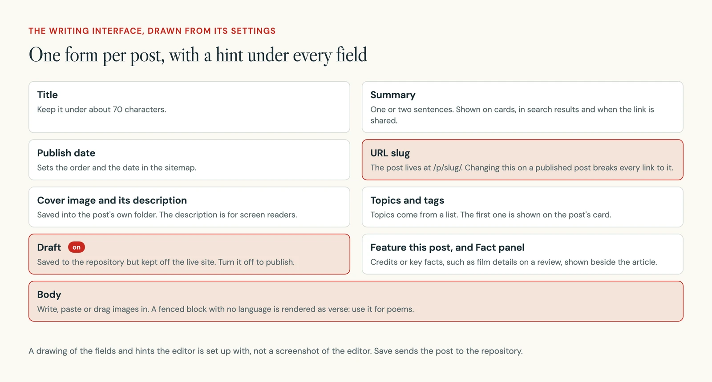
In the build: the editor is Sveltia CMS, an open-source editor that saves straight into the repository. I ruled out its review mode, which sends every post through a separate branch and a pull request. That is the git ceremony I was trying to remove. Instead, Save always commits, and the Draft switch decides whether a post appears on the site.
Signing in took three forms in two days. The first version needed a GitHub account on the device. That made writing from a phone, or from someone else's laptop, more trouble than it was worth.
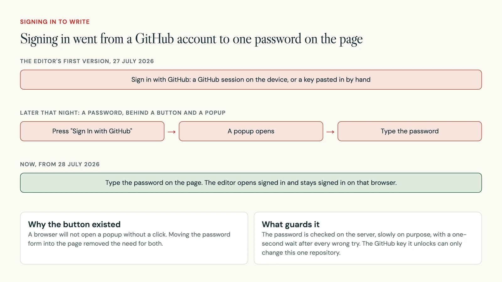
Now a small function on Netlify checks the password and hands the editor a GitHub key that is stored there, never in the code. The key can only change this one repository's files.
07 Decision 4
Light by default, and every small grey passes contrast
What you see: warm paper and dark ink, with a violet accent taken from the feather in the logo. Dark mode is there, but only when a reader switches it on, and the site remembers the choice.
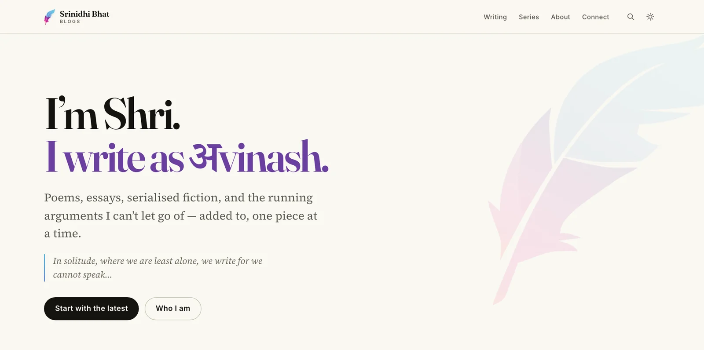
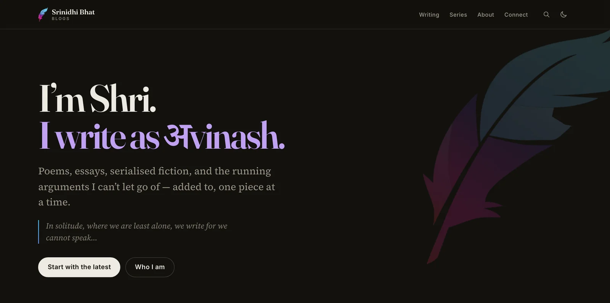
In the build: the old theme was dark by default, and the first Astro version followed the device's setting. I removed that. The site is a paper-coloured thing, so I made dark a choice the reader makes, not one the phone makes for them.
Then I measured contrast. A contrast ratio says how far apart two colours are in brightness, and small text needs at least 4.5 to 1. The faint grey under every caption, byline and date was 3.5 to 1. It is now 5.2 to 1 on the page background. The topic colours were worse.
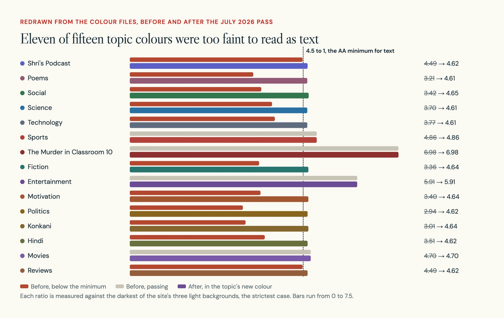
The topic colours were picked for cream paper and turn muddy on charcoal. In the dark theme, any colour used as text is mixed part of the way toward the light ink first. Dots and backgrounds keep the colour as picked.
08 Reading it
The same pages on a phone, with search that needs no server
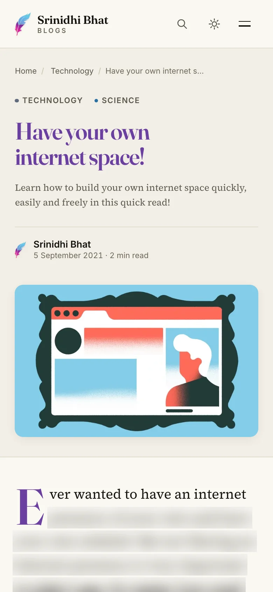
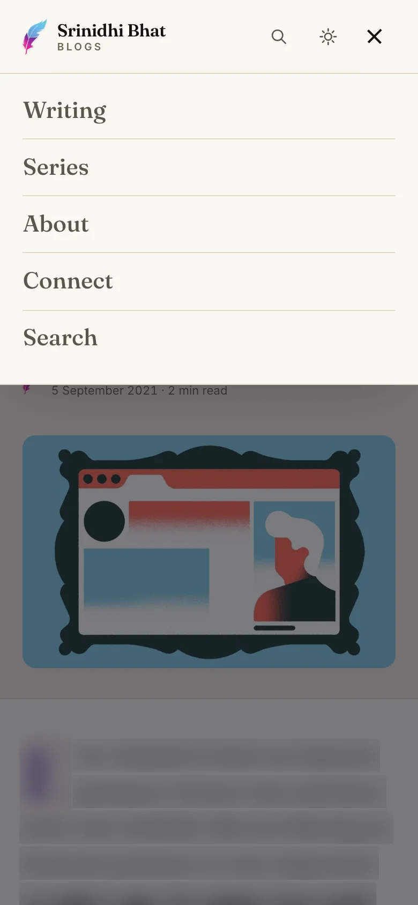
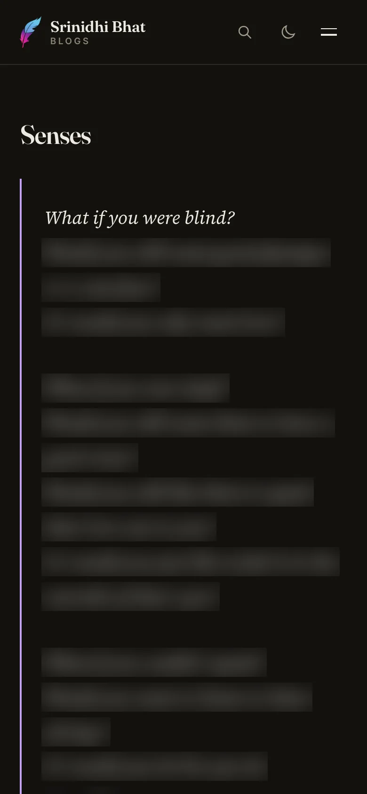
On a phone the header controls are at least 44 pixels square, the size a thumb can hit reliably. The reading progress bar and the scroll effects were reworked so they do less work on every scroll.
Search is built by Pagefind after the pages exist. It writes a small index that the reader's browser searches on its own, so nothing has to run on a server.
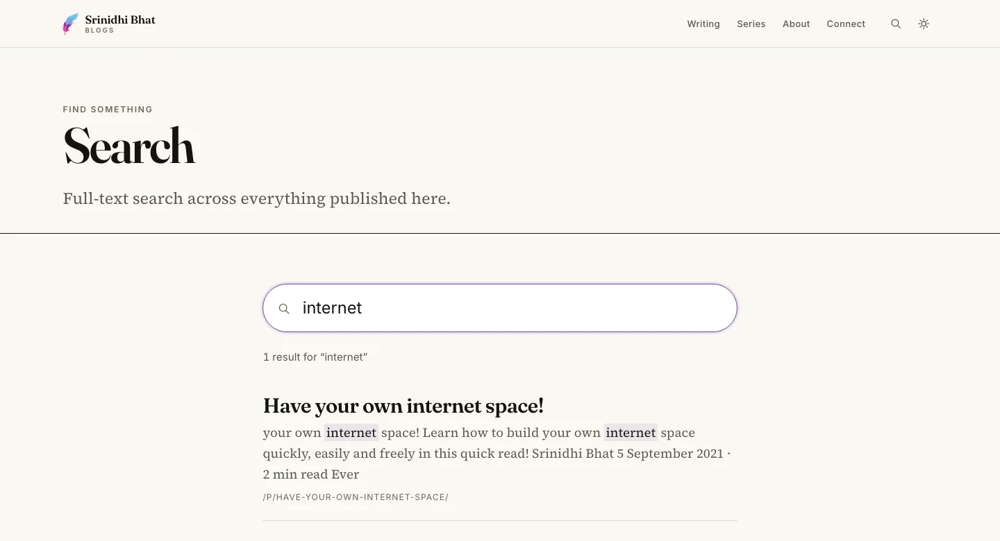
09 The build
Five years of Markdown, cleaned up on the way to the page
The posts were written over five years with no house rules. Rather than edit 32 posts by hand, I added small steps that fix them while the site is built.
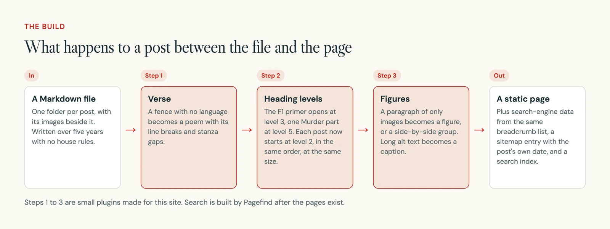
Every old address still works. Posts stay at the same paths they had on Hugo, and the old feed and page addresses are redirected to their new homes.
| Part | What I used |
|---|---|
| Site | Astro 5 with MDX, building static pages |
| Writing interface | Sveltia CMS, saving to a private GitHub repository |
| Sign-in | One Netlify Function that checks the password |
| Search | Pagefind, built after the pages |
| Type | Fraunces, Source Serif 4, Inter and Noto Serif Devanagari, served by the site itself |
| Hosting | Netlify, rebuilt on every save |
- 75
- commits, May 2021 to July 2026
- 32
- posts moved, every address kept
- 168
- pages in the last build, 107 of them tag pages
- 67KB
- headline font, down from 121KB with no visible change
There are no automated tests and no checks that run on each save.
| Problem | What went wrong, and what I changed |
|---|---|
| Heading levels | Posts started their headings wherever felt right. The F1 primer opens at level 3 and one mystery part uses a single level 5. Every post skipped a level. A build step now renumbers them in order and keeps the old size for styling. |
| Comments | The comment service was set to its dark style on its own dashboard. On cream paper that put pale grey on pale cream, and threads looked empty. I moved comments onto the dark band, where they read in both themes. |
| Page load | A timer loaded the comments four seconds into every post, read or not, bringing most of a megabyte of third-party script. It is gone. Comments now load when the reader reaches them, and analytics waits until the page has loaded. |
| Hindi font | The Devanagari font was declared with an outdated format name. Outside Chrome and Safari the browser ignored it, and the poems fell back to a system font. One word fixed it. |
| Search engines | The sitemap told search engines that every post had changed on the day of the build. Each post now carries its own date. |
10 Where it stands
Live, with 32 posts and no reader numbers
The blog is live at blogs.srinidhibhat.com. It holds 32 posts: seven poems, essays, a three-part mystery, a nine-episode written podcast, a five-part Formula 1 primer and a film review. The newest is from October 2025.
The site has analytics, but I have no reader numbers or feedback to share. Three gaps remain:
- I have nothing on record from readers: no test sessions and no feedback.
- The accessibility results were not saved, so I cannot show them.
- There are no automated tests, so a change could break a page without warning.
11 What is next
Make the hidden rules visible in the editor
- Show in the editor which series a post will join, before it is saved, so a mistyped title cannot drop a part.
- Make it clearer whether the latest save is live or still building.
- Then test the writing side with three tasks done without any developer tools: publish a draft, update an old post, and add a new part to a series. Count accidental publishing and links broken by a changed address.
12 What I learned
The best rules were habits I already had
The two rules that made the move easy were not new. My poems were already in fences and my serials already had part numbers in their titles. Reading those habits as rules let the poems and the serials move across without being rewritten.
The same choice is the weak spot. A rule nobody can see is easy to break. If I built it again, I would keep the habits and add one line in the editor that says what the habit will do.
Get everyone in. Keep the round moving.